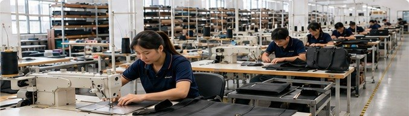
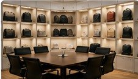

01
OEM/ODM Development
We help review size, fabric, structure, color, logo placement and packing details before sample making.
OEM / ODM Custom Bag Factory
O'Lay helps brands, importers and promotional buyers turn bag ideas into production-ready products. Our team supports material selection, sampling, bulk manufacturing, inspection, packing and export communication.
Company Overview
Custom bag orders usually involve many small decisions: fabric weight, lining, zipper, shape, printing method, packing and target cost. We work through these details before production so buyers can reduce back-and-forth and keep projects moving.
Our main products include cosmetic bags, toiletry bags, shopping bags, cooler bags, sports bags, drawstring bags and travel organizers.

What We Do
Each block uses a different factory photo to make the page clearer, more credible and easier to read.
We help review size, fabric, structure, color, logo placement and packing details before sample making.

Reference styles, available materials and previous samples make early project evaluation faster and more practical.
Material, stitching, logo work, size and finished packing are checked to support stable B2B order quality.
Carton packing, label details and shipment coordination are handled for international B2B orders.
Manufacturing Strength
For private-label and promotional bag buyers, the first order is only the start. We care about repeatable workmanship, clear updates and realistic lead-time control so future orders are easier to manage.
Manufacturing Process
Confirm product type, size, material, logo and packing needs.
Prepare samples and adjust details before order approval.
Arrange cutting, sewing, branding and batch production.
Check workmanship, quantity and packaging details.
Use suitable export cartons and buyer label requirements.
Coordinate delivery updates and export communication.
Buyer Navigation
Buyer Questions
Please send product type, size, material, logo method, order quantity, packing needs and destination market. A reference photo is also helpful.
Yes. We can review a photo, sketch or physical reference sample and suggest practical material, structure and logo options.
Yes. O'Lay supports OEM/ODM bag projects for brands, importers, retailers, gift suppliers and promotional buyers.
We confirm production details early, follow up during manufacturing and check finished goods before export packing.
Work With O'Lay
Send your idea, material request or reference sample. Our team will help you move from sample review to bulk production with practical support.